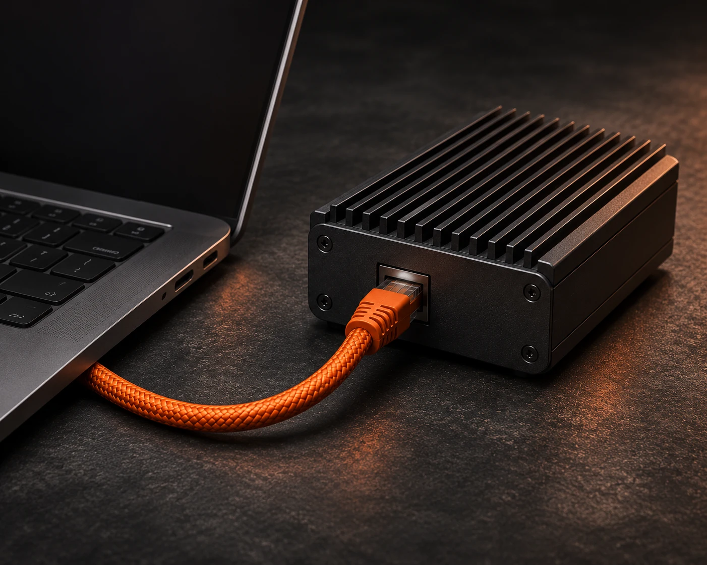

Edit locally.
Run on your Linux box.
Give an idle Linux PC a job. Run your dev servers there over SSH and keep your editor and browser on your laptop.
Open source under the MIT license
Start on your laptop.
Run on Linux.
Connect to your Linux PC once. From your project folder, run remote-dev up and open the address it prints in your browser.
Read the video description
Dev servers and test runs can crowd a laptop. The film shows an unused Linux PC being switched on and connected. The developer runs remote-dev up from the laptop, then opens a sample app in its browser while the PC runs the app. Tests can run on Linux as configured Docker Compose jobs. The soundtrack is instrumental.
remote-dev connect devbox- Check and remember your Linux server over SSH.
remote-dev up- Start your dev services from your Git worktree.
- Open the local URL
- Use your laptop browser. Saved changes sync to Linux.
Start with the repo you already have.
The public beta supports Docker Compose, common Node development scripts, and explicit TOML for custom start commands.
On your Linux server, have SSH access, Python 3.11+, Docker Engine, and the Compose plugin. On your computer, use Python 3.11+, Git, OpenSSH, and uv.
Read the setup guidePublic beta
uv tool install 'git+https://github.com/Ross-cripto/remote-dev.git'
remote-dev connect devboxReplace devbox with your SSH alias or user@server. From your project’s Git worktree, run remote-dev up.